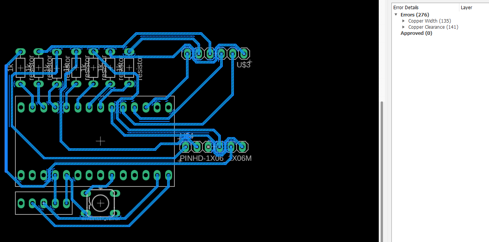
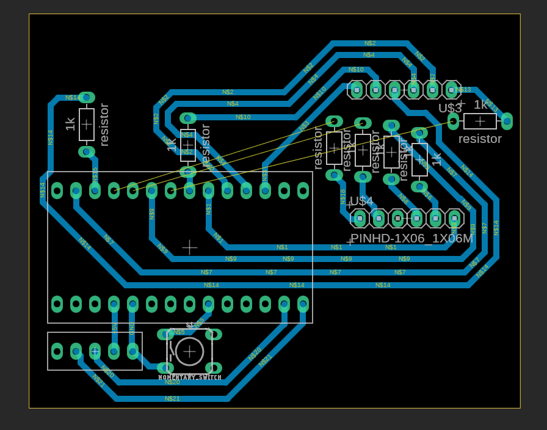
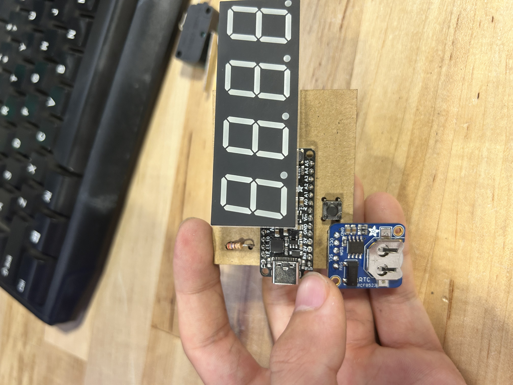
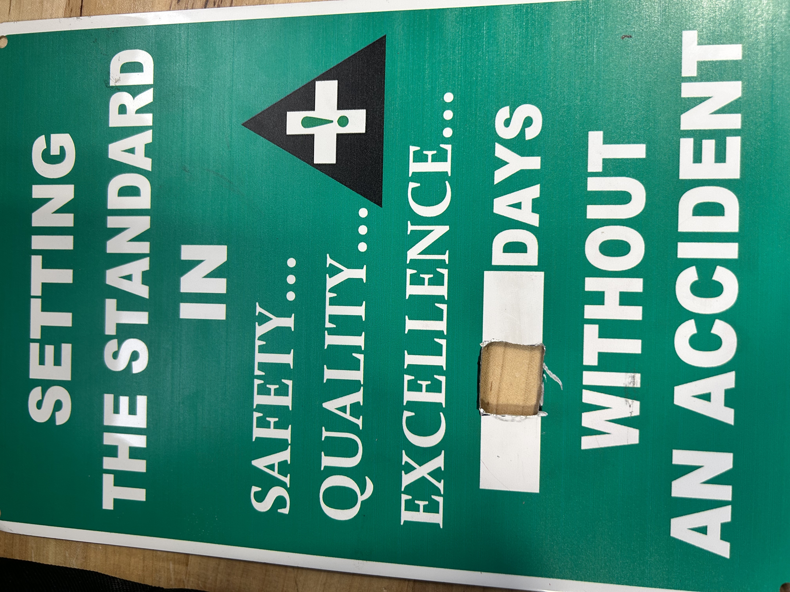
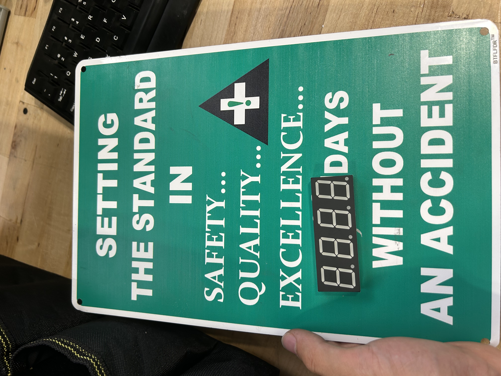
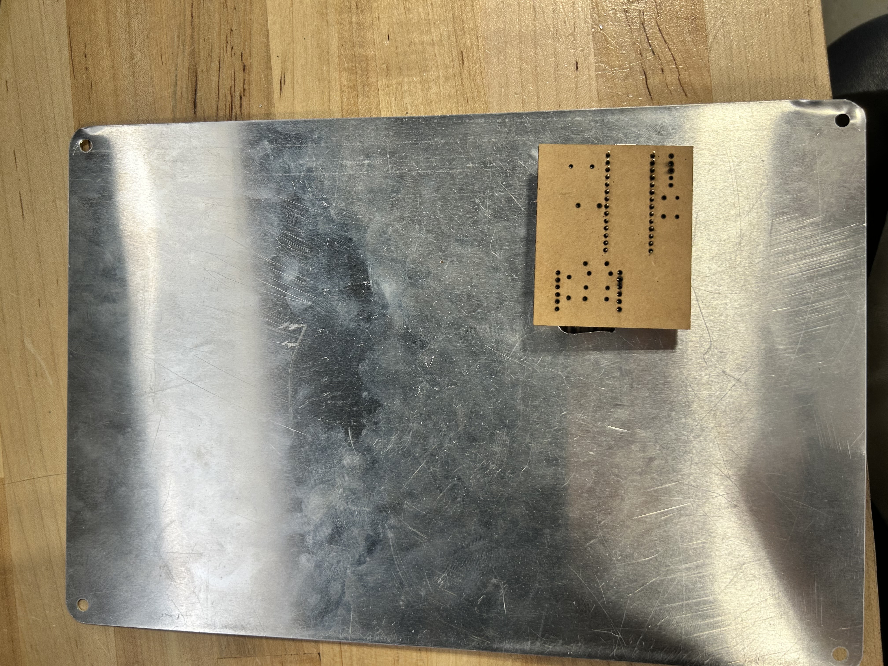
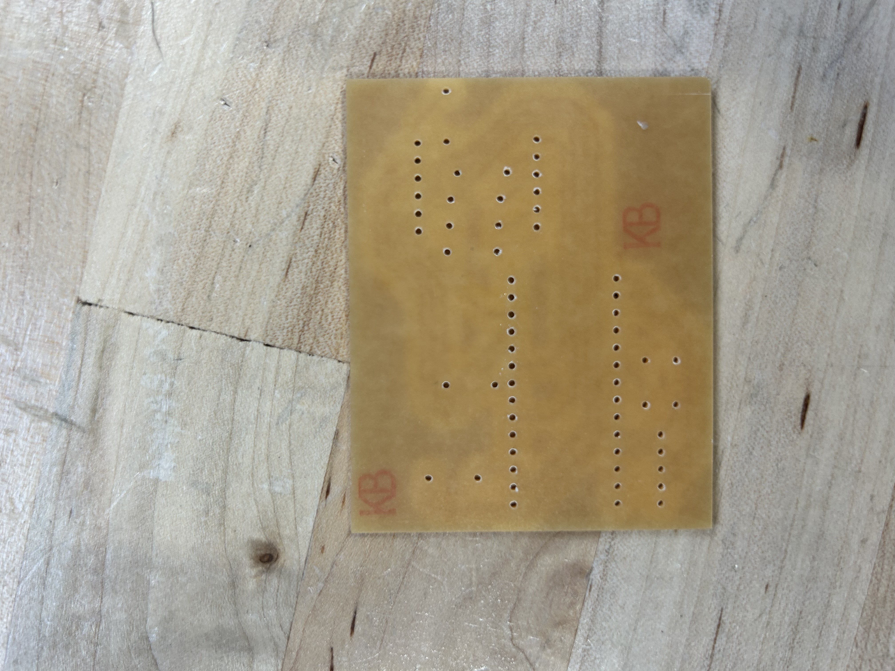
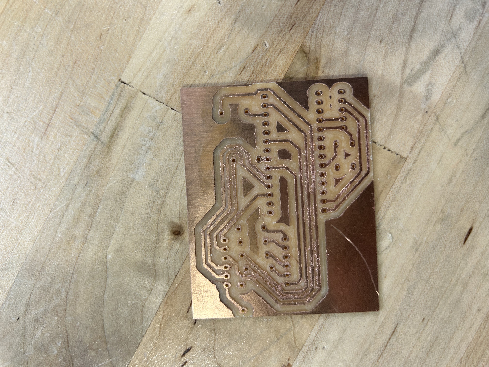

junior week 9/29 - 10/2
hopefully gonna be done with this project in a week, then i'll be working on a keyboard.
pcb
creating a pcb generally isn't that hard, but i couldn't figure out an orientation in which all the wires could be perfectly connected.

one of my fails where i tried to use 20mills for the thickness. drc rules didn't like that.
i spent a lot of time working on possible arrangements until i ended up with 3 air wires, the least i think i can go to.
miles recommended that i just create my own traces and pads rather than trying to force myself to wire everything, so that is what i'll be doing
in the end, the pcb document looked like this:

cardboard pcb
a few weeks ago, mr. christy was talking about creating a pcb out of cardboard with the lasercutter to ensure everything fits.
since i wasn't use a footprint and symbol for my seven seg and arranged holes based on the distance which i measured, i decided that was a good idea.
this is what my first pcb printout looked like:

while it was on top of the metromini, i didn't mind too much. however, there was a chance that a little pressure would cause the seven segment to click the "reset" button on the metromini, which would reset the timer which is not ideal
i shifted the location of the headers, and reprinted. this worked out a lot better

hole
before making the pcb, i wanted to test the pcb and everything inside the sign, to ensure everything worked correctly.
with some help from miles teaching me and mr.l, i dremelled a hole in the sign.

also broke a blade when doing this. oops...
the hole was a bit small, so the pins were bent slightly. this meant that the distance for the holes on the original pcb wouldn'tn work, so i made another cardboard one after fixing it
also added electrical tape so the wires don't short themselves
final product looked like this:


actual pcb
printed it, and it worked out fine


just have to solder it now, and create a bigger button for reseting this. should be done by next week. hopefully the pcb works as intended and i don't burn traces while trying to create my own trace.